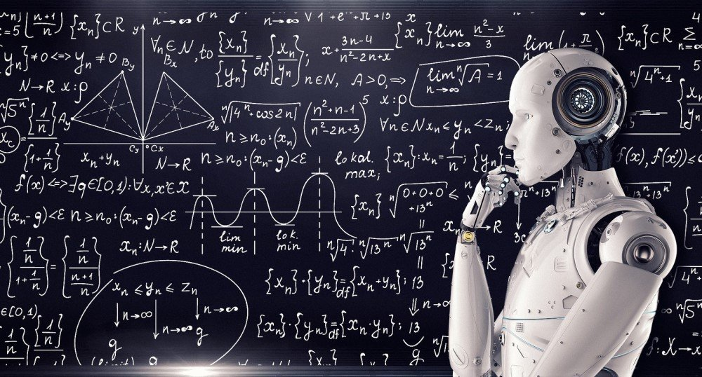

|
Logica si rezolvarea problemelor Ingineria cunoașterii Planificarea Învățarea automată Inteligența socială și informatica Creativitatea Inteligenta generala |
Inteligenta generala Adesea, inteligența generală este obiectivul general pentru IA, deoarece încearcă să permită sistemelor să funcționeze peste performanțele umane.Aceasta înseamnă că poate avea mai multe cunoștințe și abilități pentru a depăși oamenii și pentru a ajuta societățile să eficientizeze procesele, ceea ce poate crește productivitatea. În plus, inteligența generală poate provoca crearea unui creier sau conștiință artificială în cadrul sistemului IA. |